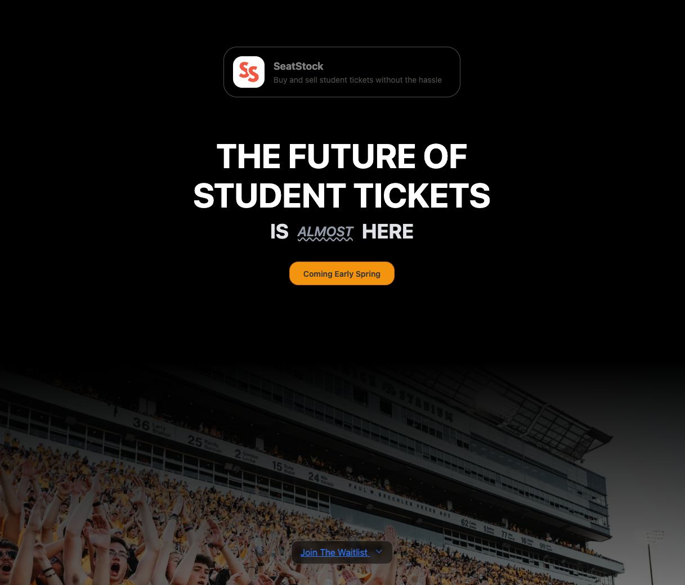
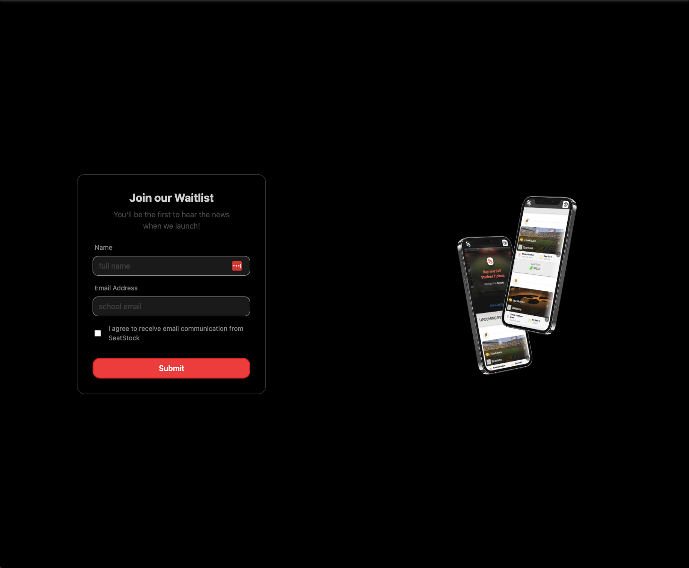
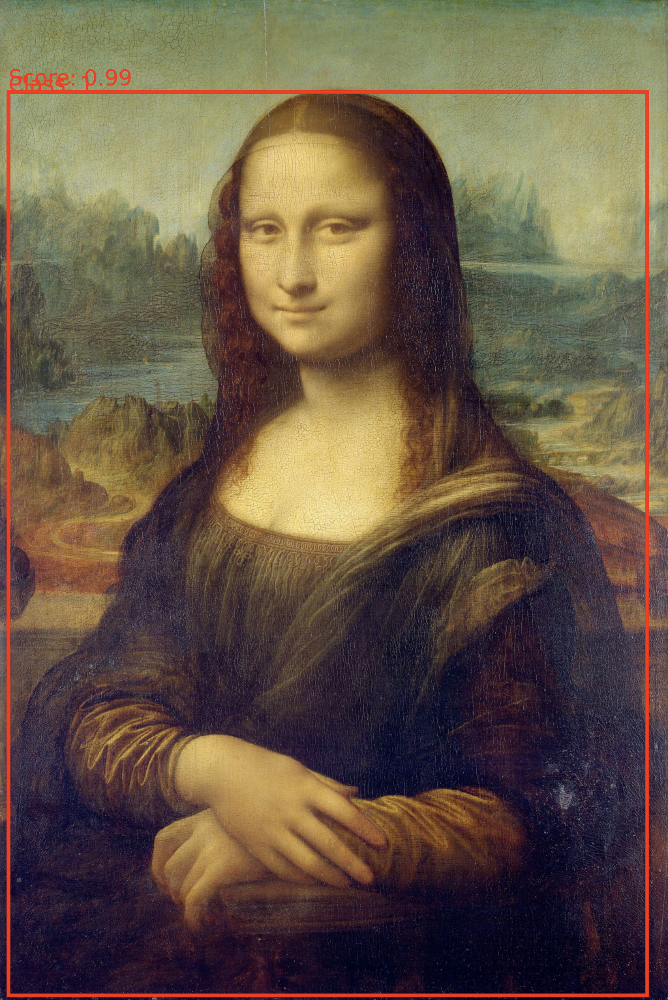

SeatStock - React.js, Tailwind


Description: Co-founded and served as the Lead Frontend Developer for a student ticket sales startup.
Achievements:
- Authored over 5000 lines of advanced React.js code, seamlessly integrating Tailwind CSS for a sleek and responsive user interface.
- Contributed expertise to backend management, database development, web hosting, and Docker containerization, ensuring a scalable and reliable platform.
Achievements:
- Authored over 5000 lines of advanced React.js code, seamlessly integrating Tailwind CSS for a sleek and responsive user interface.
- Contributed expertise to backend management, database development, web hosting, and Docker containerization, ensuring a scalable and reliable platform.
Art and Artifact Cataloger - PyTorch

Description: Art and artifact cataloging project using PyTorch object detection.
Achievements:
- Implemented custom object detection models to identify and localize art pieces within images.
- Designed and integrated attribute recognition modules for automatic metadata extraction, including artist, title, date, and more.
Future Direction: Ongoing project with plans to enhance search capabilities, data enrichment, and integration with external art databases to further enrich cataloged information.
Achievements:
- Implemented custom object detection models to identify and localize art pieces within images.
- Designed and integrated attribute recognition modules for automatic metadata extraction, including artist, title, date, and more.
Future Direction: Ongoing project with plans to enhance search capabilities, data enrichment, and integration with external art databases to further enrich cataloged information.
Covid-19 Data Visualizer - Python, Matplotlib, HTML
Description: Designed and implemented a web application utilizing Flask and Plotly to visualize John Hopkins University's Covid-19 dataset.
Achievements:
- Created an interactive dashboard to visualize raw COVID-19 data.
- Developed a comparative analysis feature, enabling users to contrast COVID-19 trends across different countries and regions.
Repo: github.com/liamstamper/covid19-visualizer
Achievements:
- Created an interactive dashboard to visualize raw COVID-19 data.
- Developed a comparative analysis feature, enabling users to contrast COVID-19 trends across different countries and regions.
Repo: github.com/liamstamper/covid19-visualizer
Portfolio - HTML, CSS
Description: The updated code for this site is available below.
Repo:github.com/liamstamper/portfolio
Repo:github.com/liamstamper/portfolio